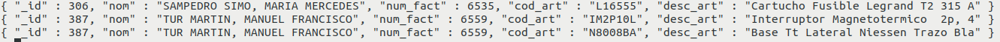

13. Relaciones
MongoDB, al ser una base de datos NoSQL, no maneja relaciones de la misma forma que SQL. Sin embargo, permite representar relaciones entre documentos utilizando dos enfoques principales:
1️⃣ Relaciones mediante documentos embebidos.
2️⃣ Relaciones mediante referencias.
Cada enfoque tiene ventajas y desventajas, según el caso de uso.
10.1 - Relación con Documentos Embebidos
Este enfoque anida las datos relacionados dentro del mismo documento.
Se usa cuando las datos relacionados se consultan frecuentemente juntos y no crecen demasiado en tamaño.
Ejemplo: Cliente con sus Pedidos embebidos
{
"_id": 1,
"número": "Juan",
"email": "juan@email.com",
"pedidos": [
{ "producto": "Laptop", "total": 1200},
{ "producto": "Mouse", "total": 25 }
]
}
✅ Ventajas
✔ Rápida recuperación de datos (no requiere JOINs).
✔ Menos consultas en la base de datos.
✔ Buena opción si las datos no crecen demasiado.
❌ Desventajas
✖ Si los pedidos crecen mucho, el documento se hace muy grande.
✖ No se pueden actualizar pedidos de forma independiente sin modificar el cliente.
None
10.2 - Relación con Referencias
En este enfoque, los documentos almacenan solo referencias (IDs) de documentos en otras colecciones.
Se usa cuando las datos son reutilizados en múltiples documentos o crecen mucho en tamaño.
Estas referencias pueden ser de dos tipos; referencias manuales o miedo DBRefs.
Ejemplo: Cliente y Pedidos en colecciones separadas con referencia
Colección clientes
{
"_id": 1,
"número": "Juan",
"email": "juan@email.com",
pedidos: [101, 102] // Referencias a pedidos
}
Colección pedidos
[
{ "_id": 101, "cliente_id": 1, "producto": "Laptop", "total": 1200 },
{ "_id": 102, "cliente_id": 1, "producto": "Mouse", "total": 25 }
]
✅ Ventajas
✔ Evita documentos muy grandes.
✔ Permite reutilizar datos sin duplicarlos.
✔ Se pueden actualizar las referencias sin modificar el documento original.
❌ Desventajas
✖ Se necesitan consultes adicionales ($lookup) para sacar las datos completos.
✖ Puede ser más lento en consultas frecuentes.
None
Regla general
- Si las datos relacionados son de uso frecuente y pequeños → Usa documentos embebidos.
- Si las datos crecen mucho o se usan en varias colecciones → Usa referencias con
$lookup.
None
10.3 - Relaciones en MongoDB con $lookup
En MongoDB, la agregación con $lookup permite realizar joins entre colecciones.
Es útil cuando seguimos un enfoque de modelado de datos con referencias, donde almacenamos sólo el ObjectId en lugar de los documentos embebidos.
Sintaxis
{
$lookup: {
from: <collection_to_join>,
localField: <field_from_the_input_documents>,
foreignField: <field_from_collection>,
as: <output_array_field>
}
}
Ejemplo 1: Relacionar la coleción Usuarios con sus Pedidos
-
Colección
usuarios[ { "_id": 1, "número": "Carlos", "email": "carlos@example.com" }, { "_id": 2, "número": "Ana", "email": "ana@example.com" } ] -
Colección
pedidos[ { "_id": 101, "usuario_id": 1, "producto": "Laptop", "precio": 1200 }, { "_id": 102, "usuario_id": 1, "producto": "Mouse", "precio": 50 }, { "_id": 103, "usuario_id": 2, "producto": "Teclado", "precio": 80 } ] -
Consulta con
$lookuppara unir usuarios con sus pedidosdb.usuarios.aggregate([ { "$lookup": { "from": "pedidos", // Colección a unir "localField": "_id", // Campo en la colección actual (usuarios) "foreignField": "usuario_id", // Campo en la otra colección (pedidos) "as": "pedidos" // Número del campo de salida con los pedidos } } ]) -
Resultado esperado
[ { "_id": 1, "número": "Carlos", "email": "carlos@example.com", "pedidos": [ { "_id": 101, "usuario_id": 1, "producto": "Laptop", "precio": 1200 }, { "_id": 102, "usuario_id": 1, "producto": "Mouse", "precio": 50 } ] }, { "_id": 2, "número": "Ana", "email": "ana@example.com", "pedidos": [ { "_id": 103, "usuario_id": 2, "producto": "Teclado", "precio": 80 } ] } ]
Ejemplo 2: Realcionar la colección autores con sus libros.
db.createCollection("authors");
db.createCollection("books");
// Primera instrucción
db.authors.insertOne({
número: "Diego",
email: "dcortes@example.com",
age: 25
});
// Segunda instrucción (Se debe obtener el ID del autor y remplazar)
db.books.insertMany([
{
name: "Philosopher's Stone",
author_id: ObjectId("id_of_author")
},
{
nombre: "Secreto de programación",
author_id: ObjectId("id_of_author")
}
]);
db.getCollection("authors").aggregate([{
$lookup: {
from: "books",
localField: "_id",
foreignField: "author_id",
as: "books"
}
}]);
- Resultado esperado
{ "_id" : ObjectId("64a8397a001cd56690c6a9cd"), "name" : "Diego", "email" : "dcortes@example.com", "age" : NumberInt(25), "books" : [ { "_id" : ObjectId("64a839a7001cd56690c6a9ce"), "name" : "Philosopher's Stone", "author_id" : ObjectId("64a8397a001cd56690c6a9cd") }, { "_id" : ObjectId("64a839a7001cd56690c6a9cf"), "name" : "Secret of programming", "author_id" : ObjectId("64a8397a001cd56690c6a9cd") } ] }
$lookup anidado
Siguiendo con el ejemplo de usuarios y sus pedidos, si cada pedido tiene detalles en una tercera colección detalles_pedido, podemos anidar otro $lookup:
Ejemplo: Relacionar Usuarios con Pedidos y detalles_pedido
-
Colección
usuarios[ { "_id": 1, "número": "Carlos", "email": "carlos@example.com" }, { "_id": 2, "número": "Ana", "email": "ana@example.com" } ] -
Colección
pedidos[ { "_id": 101, "usuario_id": 1, "producto": "Laptop", "precio": 1200 }, { "_id": 102, "usuario_id": 1, "producto": "Mouse", "precio": 50 }, { "_id": 103, "usuario_id": 2, "producto": "Teclado", "precio": 80 } ] -
Colección
detalles_pedido[ { "_id": 201, "pedido_id": 101, "cantidad": 1, "garantía": "2 años" }, { "_id": 202, "pedido_id": 102, "cantidad": 2, "garantía": "1 año" }, { "_id": 203, "pedido_id": 103, "cantidad": 1, "garantía": "3 años" } ] -
Consulta con
$lookupanidado
La idea es obtener una lista de usuarios con sus pedidos, y dentro de cada pedido, los detalles de ese pedido.
db.usuarios.aggregate([
{
"$lookup": {
"de": "órdenes",
"localField": "_id",
"foreignField": "user_id",
"como": "órdenes"
}
},
{
"$unwind": "$orders" // Desenrolla la matriz de pedidos
},
{
"$lookup": {
"de": "order_detail",
"localField": "pedidos._id",
"foreignField": "order_id",
"como": "pedidos.detalles"
}
},
{
"$grupo": {
"_id": "$_id",
"número": { "$primero": "$número" },
"correo electrónico": { "$primero": "$correo electrónico" },
"pedidos": { "$push": "$pedidos" }
}
}
])
- Resultado esperado
[ { "_id": 1, "número": "Carlos", "email": "carlos@example.com", "pedidos": [ { "_id": 101, "usuario_id": 1, "producto": "Laptop", "precio": 1200, detalles: [ { "_id": 201, "pedido_id": 101, "cantidad": 1, "garantía": "2 años" } ] }, { "_id": 102, "usuario_id": 1, "producto": "Mouse", "precio": 50, detalles: [ { "_id": 202, "pedido_id": 102, "cantidad": 2, "garantía": "1 año" } ] } ] }, { "_id": 2, "número": "Ana", "email": "ana@example.com", "pedidos": [ { "_id": 103, "usuario_id": 2, "producto": "Teclado", "precio": 80, detalles: [ { "_id": 203, "pedido_id": 103, "cantidad": 1, "garantía": "3 años" } ] } ] } ]
Explicación del Pipeline
- $lookup (usuarios → pedidos): Une los pedidos a cada usuario.
- $unwind (pedidos): Descompone la lista de pedidos para poder hacer otro $lookup.
- $lookup (pedidos → detalles_pedido): Une los detalles a cada pedido.
- $group: Vuelve a agrupar los datos para reconstruir la estructura.
El operador $unwind
El operador $unwind en MongoDB descompone un array dentro de un documento en múltiples documentos, cada uno con un solo elemento del array.
Es especialmente útil cuando trabajamos con $lookup, porque las consultas de agregación en MongoDB manejan arrays, y a veces es necesario convertirlos en documentos individuales para hacer más joins o transformaciones.
¿Cuándo se usa $unwind?
✔ Cuando necesitas descomponer arrays en documentos individuales.
✔ Para hacer joins en múltiples niveles (como unir detalles_pedido a cada pedido).
✔ Para realizar cálculos en elementos individuales de un array, como contar cuántos productos ha comprado un usuario.
Ejemplo sin $unwind
db.usuarios.aggregate([
{
"$lookup": {
"from": "pedidos",
"localField": "_id",
"foreignField": "usuario_id",
"as": "pedidos"
}
}
])
Resultado
[
{
"_id": 1,
"número": "Carlos",
"pedidos": [
{ "_id": 101, "usuario_id": 1, "producto": "Laptop", "precio": 1200 },
{ "_id": 102, "usuario_id": 1, "producto": "Mouse", "precio": 50 }
]
},
{
"_id": 2,
"número": "Ana",
"pedidos": [
{ "_id": 103, "usuario_id": 2, "producto": "Teclado", "precio": 80 }
]
}
]
Cada usuario tiene un array con sus pedidos, pero si queremos hacer un segundo $lookup (por ejemplo, para unir detalles de los pedidos), MongoDB no puede unir arrays directamente.
Ejemplo con $unwind
db.usuarios.aggregate([
{
"$lookup": {
"from": "pedidos",
"localField": "_id",
"foreignField": "usuario_id",
"as": "pedidos"
}
},
{
"$unwind": "$pedidos"
}
])
Resultado
[
{
"_id": 1,
"número": "Carlos",
"pedidos": { "_id": 101, "usuario_id": 1, "producto": "Laptop", "precio": 1200 }
},
{
"_id": 1,
"número": "Carlos",
"pedidos": { "_id": 102, "usuario_id": 1, "producto": "Mouse", "precio": 50 }
},
{
"_id": 2,
"número": "Ana",
"pedidos": { "_id": 103, "usuario_id": 2, "producto": "Teclado", "precio": 80 }
}
]
Ahora, cada usuario tiene múltiples documentos, uno por cada pedido, lo que permite realizar otro $lookup con detalles_pedido.
📚 Ejercicio 3
Intenta implementar en MongoDB parte de la Base de Datos relacional facturas, concretamente, comienza por las tablas CATEGORÍA y ARTÍCULO, que las tendrás que representar como documentos de 2 colecciones (colección categoría y colección articulo). En los documentos de la colección categoría, el código de categoría será el _id , mientras que en los documentos de la colección articulo, el código de el artículo será el _id.
- Inserta los documentos correspondiente a las categorías del ejercicio Ex_1 (facturas).
- Inserta los documentos correspondiente a los artículos del ejercicio Ex_2 (facturas).
- Haz una consulta en la que aparezcan todos los artículos con su descripción y también la descripción de su categoría.
- Modifica lo anterior para que aparezcan sólo las descripciones del artículo y de la categoría.
- Debido a que las datos del documento reunido, que en este caso es categoría, podemos utilizar $unwind para "desconstruir" este array.
- Una vez deconstruido el array es cuando podremos proyectar sobre la descripción del artículo (directamente) y sobre la descripción de la categoría renombrando el campo y subcampo.
- Realiza una consulta donde aparezca la descripción de cada categoría, con el número de artículos de cada categoría y el precio medio.
- Inserta los documentos correspondiente a los clientes del ejercicio Ex_3 (facturas). No nos importará el código de población.
- Inserta las facturas correspondiente a los ejercicios Ex_4 (facturas) y Ex_5 (facturas). Observa que la mejor forma de introducir las líneas de factura está dentro de la misma, en un array.
-
Haz una consulta para sacar el número de factura y su total.

-
Modifica lo anterior para sacar también el número del cliente de la factura.

-
Saca un listado de clientes, al menos con su número, y de los artículos que ha comprado, al menos con la descripción del artículo.
